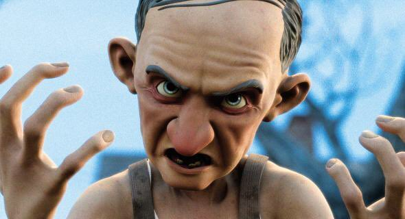

No dia 30 de outubro, uma garota está andando pela sua vizinhança com seu triciclo, quando o mesmo fica preso no gramado do Sr. Epaminondas, um senhor de idade muito arrogante e assustador, que, por algum motivo, não permite que ninguém pise no seu gramado. Ele sai da casa dele, ameaça a menina e toma seu triciclo. Ao passo que ela sai chorando, Sr. Epaminondas volta para sua casa e olha com raiva para D.J. Walters, um garoto de doze anos de idade que estava o espiando por um telescópio, pois o estranho senhor confisca tudo o que cai no seu quintal, o que intriga DJ.